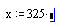
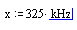

Overview of Units and Dimensions |
Mathcad provides a complete set of units in the SI, CGS, US, and MKS unit systems. You can multiply values by these built-in units or by your own custom-defined units. Mathcad checks your worksheet for dimensional consistency and automatically displays results in terms of the appropriate units for the chosen unit system. The default unit system is SI (International System of Units).
To see a list of currently available units in the Insert Unit dialog box, choose Unit from the Insert menu or click on the Insert Unit button on the main toolbar.
| Dimensions |
A dimension is a physical quantity associated with a number, an array, or a variable representing a number or array. You can combine any of the following Mathcad base dimensions:
Note that a dimension is not a unit. A unit is a way to measure a dimension. For example, "ft," "cm," and "mm" are three different ways to measure the dimension "length."
| Adding Units to Variables or Constants |
To add units to a variable or constant, simply multiply the variable or constant by the name of the unit, as shown below:
Click in the variable or constant.
Press * to insert the multiplication operator and a placeholder.

Type the name of a unit in the placeholder or choose Unit from the Insert menu.

You may want to use an affine unit or nonlinear scale, such as the Celsius or Fahrenheit temperature scales. Since these scales are functions and not multiplications, you must use the postfix operator to assign these "units" to a value. Fahrenheit and Celsius are available from the Insert Unit dialog as are temperature change units.
| Dimensional Analysis (Type Checking) |
Adding dimensions into your Mathcad worksheets has profound implications. Mathcad verifies that each defined function balances dimensions correctly before they are evaluated. This means that you can verify the dimensional consistency of your worksheets without even evaluating your equations. You can determine valid dimensional signatures of function arguments. This is called the type or dimensional signature of a function, which is available by entering any function name followed by =.
This type of dimensional checking places the following restriction on expressions: the dimensions of the output must depend only on the dimensions of the inputs, and not on their particular values. For this reason, you cannot raise a dimensioned value to a variable power in Mathcad. Also, you cannot return different dimensions from a function based on the value of the inputs.